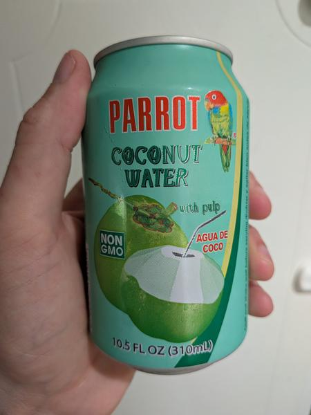

June 2025 · 10.5 fl oz (310 mL) · Still · Pasteurized · Added Sugar · Pulp · Not Organic
A Thai coconut water with an absurd amount of added sugar.
Seriously sugary. The pulp is consistent and nice to have with surprisingly high quality, but it can’t save the candy-like sweetness. At least it is cane sugar instead of HFCS or something, but this feels like it was made for a child’s palate.